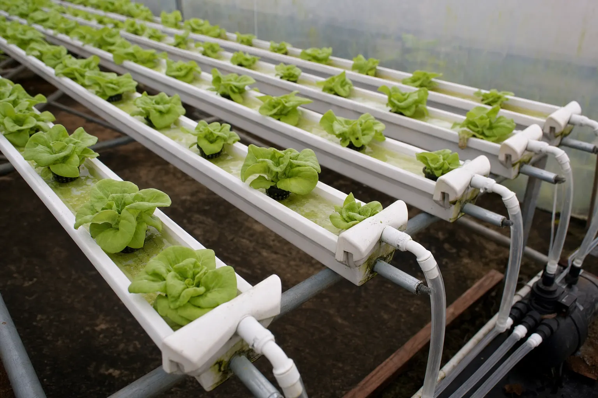

Acompañamiento Técnico Continuo
Un agrónomo a cargo de las decisiones técnicas de tu temporada: cuánto riego, qué fertilización, qué hacer con la plaga que apareció esta semana.

Productores en operación y proyectos en su primera temporada
Productores en operación que quieren decidir con datos de forma permanente, proyectos en su primera temporada, y unidades productivas que no justifican contratar un agrónomo a tiempo completo.
Plazo mínimo de 3 meses
En las modalidades mensuales, porque los ajustes agronómicos no se evalúan en semanas. Un cambio de frecuencia de riego o de programa nutricional necesita ciclos completos para mostrar su efecto.
Las decisiones técnicas de la temporada
Lámina y frecuencia de riego actualizadas y ajustadas a la etapa del cultivo, al clima y a la capacidad real de retención del suelo.
Con base en análisis: dosis, fuentes, fraccionamiento y, si aplica, receta de solución nutritiva y control de CE/pH.
Con monitoreo, umbrales de acción y criterio de rotación de mecanismos de acción.
Cuando el sistema lo requiera.
Un historial de lo medido y lo decidido, que queda en tu poder.
Para lo urgente, con respuesta en el día hábil.
Tres intensidades de seguimiento
Se elige según el tamaño de la operación, la etapa del cultivo y cuánta decisión técnica necesitas delegar.
1 visita mensual + soporte remoto
Desde $220.000 / mes Plazo mínimo 3 meses2 visitas mensuales + programa completo de riego, fertilización y monitoreo
Desde $390.000 / mes Plazo mínimo 3 mesesUn entregable puntual: balance hídrico, programa de fertilización o diseño hidráulico
Desde $150.000 Sin plazo mínimoValores referenciales netos. Se ajustan según superficie, complejidad del sistema y distancia. Los análisis de laboratorio se cotizan aparte y se cobran a costo.
El registro de temporada es tuyo
Cada medición, cada decisión y su fundamento quedan escritos en un historial reutilizable. Si mañana trabajas con otro profesional, o quieres comparar esta temporada con la siguiente, tienes la línea base.

Antes de escribir
¿Se puede empezar en cualquier momento de la temporada?
Sí. El punto de partida cambia: si el cultivo ya está establecido, la primera etapa es levantar el estado actual antes de ajustar nada.
¿Trabajas con el equipo que ya tengo en el predio?
Sí, y es lo ideal: las decisiones se ejecutan mejor cuando quien riega entiende por qué.
¿Hay contrato?
Sí, simple: alcance, visitas, plazo y valor por escrito.
¿Quieres decidir con datos toda la temporada?
Cuéntame qué produces, en qué superficie y con qué sistema de riego. Con eso definimos qué modalidad de acompañamiento tiene sentido. Sin costo por esa conversación.